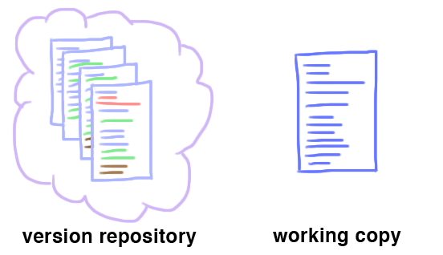

O Git trabalha com unidades que chamamos de repositórios. Que nada mais é que uma pasta de arquivos. O repositório contém duas peças principais: o repositório de versão e a cópia em andamento.
A cópia em andamento consiste de arquivos normais organizados em estrutura de diretório. E o repositório de versão, armazena as versões anteriores desses arquivos e diretórios. Podemos considerá-la dessa forma:

Para criar um repositório podemos usar o comando git init ou podemos clonar
repositórios que criamos no github ou copiamos de algum outro projeto de seu interesse (mais
comum).
git clone git@github.com:leordev/cs50-homepage.git
Digamos que você tenha feito alterações na sua cópia em andamento... O Git não faz o track
automático de cada alteração. O comando git commit -a tira uma "foto" do seu
diretório atual e salva no repositório de versão.
O flag -a significa "comite todas as alterações no diretório em
andamento".
Junto com o commit você deve adicionar uma mensagem explicativa das alterações que estão sendo adicionadas:
git commit -a "criando a página de conceitos"
Após ter commitado suas alterações, chegou a hora de copiar seu repositório de versões para
um repositório remoto. No nosso caso, estamos usando o github. Para isso basta executar o
comando git push.
Caso você esteja configurando um repositório pela primeira vez, você deve adicionar o repositório remoto e configurar o git push.
git remote add origin git@github.com:leordev/cs50-homepage.git
git push -u origin master
E pronto! Agora seu repositório está configurado, nas próximas vezes, basta utilizar o
git push apenas, como mencionado acima.
Caso você esteja trabalhando em mais de um dispositivo, ou trabalhando em equipe, você deve
sempre manter seu repositório sincronizado. Para isso, faça
git pull regularmente.